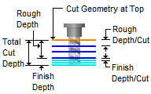

The following tab allows you to define the cut parameters for the current 2½ Axis Knife Cutting operation. You can set Global Parameters, Cut Direction, Location of Cut Geometry and Cut Depth Control and other Knife Cutting related parameters via this tab of the operation dialog. The Global Parameters section allows you to set the tolerance value to be used in machining.
Dialog Box: 2½ Axis Knife Cutting |
The Global Parameters section allows you to set the tolerance value to be used in machining. This is the allowable deviation from the actual part geometry plus the Stock allowance (if any). In 2 Axis methods, this Tolerance is applied to XY motions only.  Tolerance
|

Knife Cut supports the following swivel types. Drag supports a Swivel Depth parameter. Rotary support a Swivel Height parameter. Both are explained below.
|
For Cut Direction, select Natural to follow the direction as it is defined by the start/end points of the selected regions. Select Reversed to cut in the opposite direction. |
 Location of Cut Geometry, 2½ Axis V-Carving The cutter can be set to cut inside the curve or trace the outside of the curve. The Location of Cut Geometry can be set to At Top (top Z level), At Bottom (bottom Z level) or Pick Top (specifying the Z location) by entering a Z value location or by selecting the pick At Top This uses the Z location of the selected Machining Features/Region as the top of cut. The generated cuts will start at this Z location and cut down in Z to the specified total cut depth. At Bottom This uses the Z location of the selected Machining Features/Region as the bottom of cut. The generated cuts will be above the selected machining region and last cut would be at the Z location of the specified region. Pick Top This allows you to specify the Top of Cut for the selected Machining Features/Region and is typically used when the selected region is not at top or bottom. The generated cuts will start at this specified Z location and cut down in Z to the specified total cut depth. |
The following parameters control the depth of the knife tool during cutting. Refer to the dimensions in the dialog image for reference. Total Cut Depth
 Total Cut Depth # of Passes This will determine the depth of each cut. The Total Cut Depth divided by the # of Passes will determine the cut depth of each pass of the knife tool. Swivel Depth / Swivel Height A swivel is when the spindle performs an arc motion to align the knife tool to a change in direction at a corner. The knife tool will first retract to this Z position to perform the swivel motion and then engage to the Total Cut Depth before continuing in the new direction. It is measured relative to the top of the cut. For the Drag type it is measured below (Swivel Depth). For the Rotary type it is measured above (Swivel Height). |
Any corner in the geometry that is greater than this Corner Angle Limit will cause the knife tool to retract to the Swivel Depth, perform a swivel action, engage to the Total Cut Depth and then continue in the new direction. In all other corners where the angle is less than this Corner Angle Limit (as well as all tangential curves) only the swivel action is performed. The retract action is omitted. The Corner Angle Limit applies to both external and internal corners. |